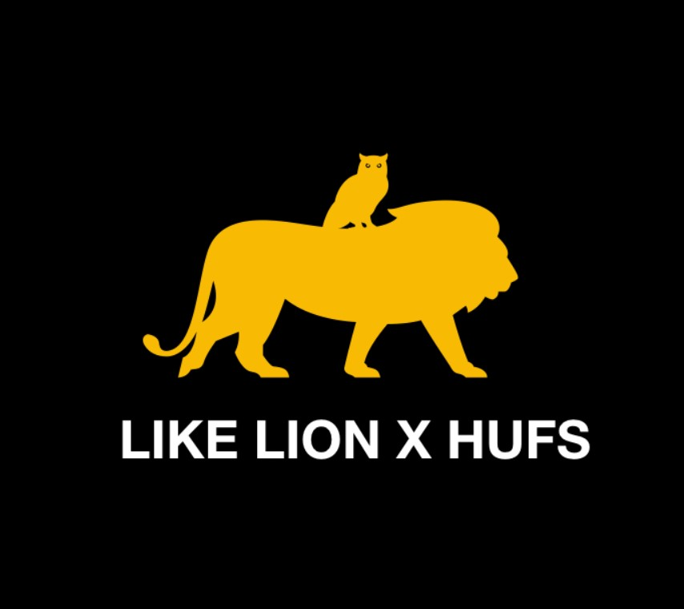

자기소개
안녕하세요, 멋쟁이 사자처럼 7기 김유선입니다.
이곳은 멋쟁이 사자처럼의 첫 번째 과제인 '내가 만들고 싶은 IT 서비스 소개하기'를 제출하기 위해 만든 홈페이지입니다!
처음이라 부족한 부분이 많지만 예쁘게 봐 주셨으면 합니다.
감사합니다! ^^

안녕하세요? 멋쟁이 사자처럼 7기 활동을 하게 된 한국외대 17학번 김유선입니다.
제 1전공은 태국어이고, 제 2전공은 융복합소프트웨어입니다.
올해부터 이중전공으로 코딩을 배우게 되었는데,
전공공부 이외의 것들도 추가적으로 공부해보고 싶어
멋사에 지원하게 되었습니다.
이번 한 해 동안 멋사에서 많이 배워가면서 다양한 경험을 해 보고 싶습니다! ㅎㅎ
좋은 모습 보여드릴 수 있도록 항상 최선을 다하겠습니다 :)
감사합니다!
